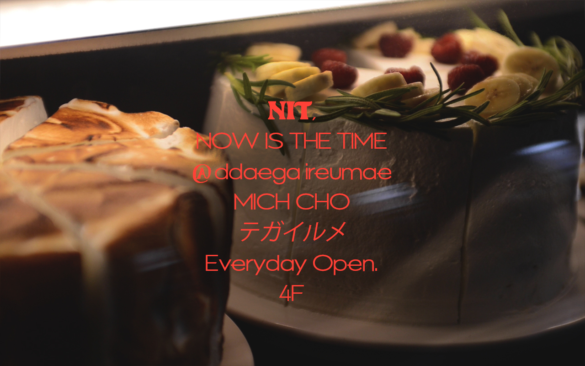
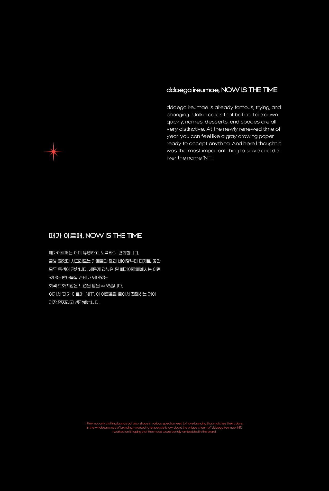
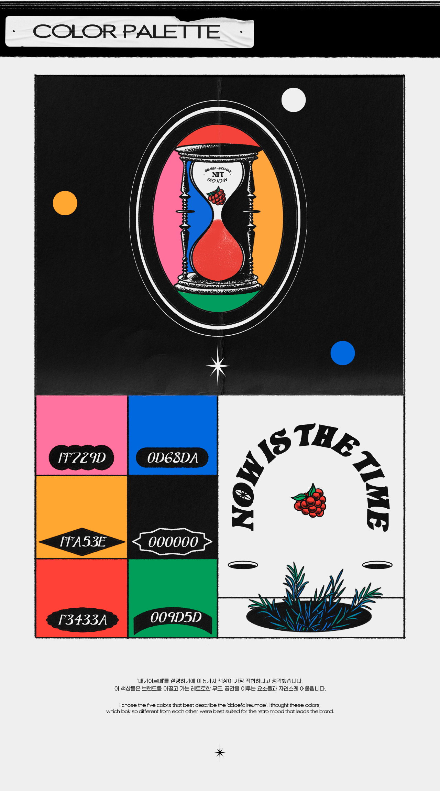
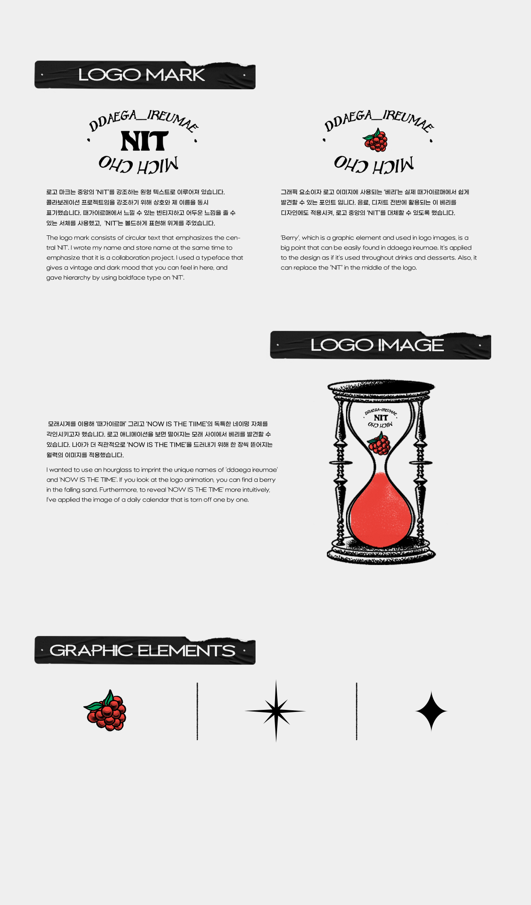
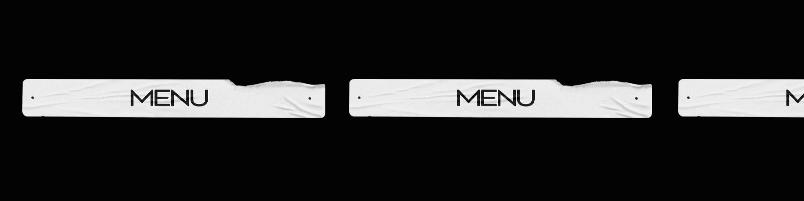
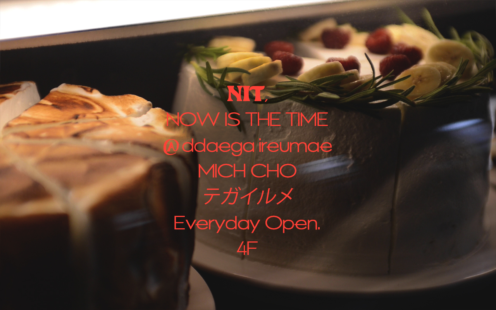
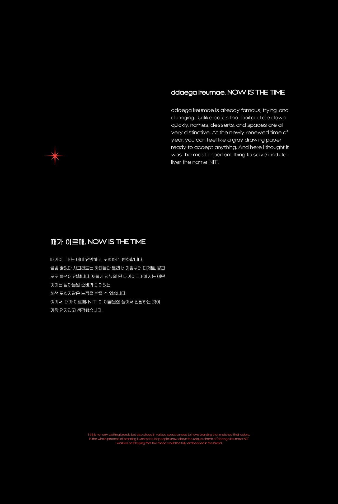
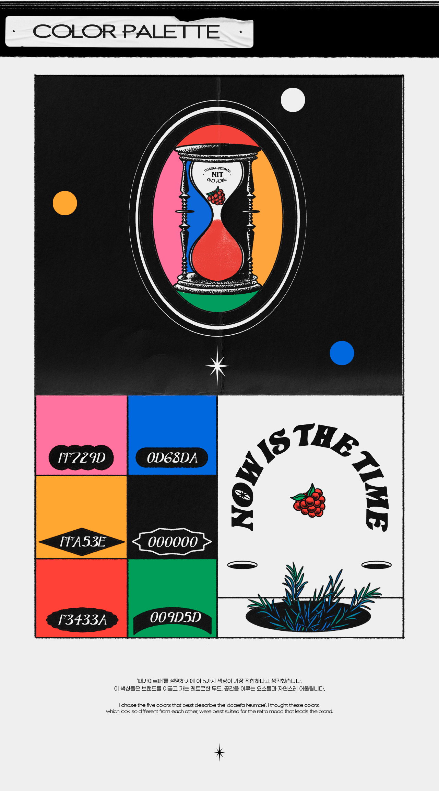
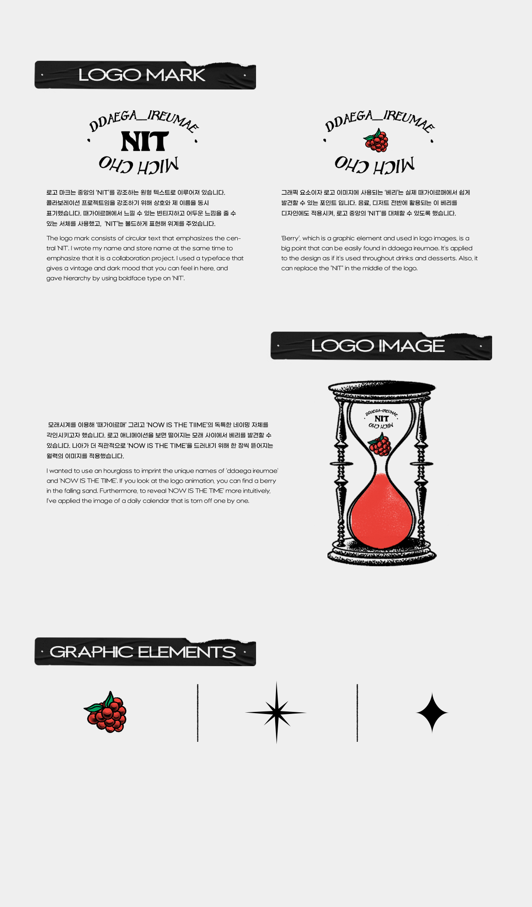
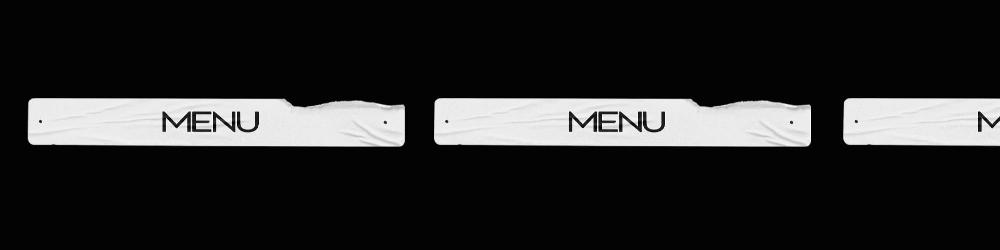

때가 이르매, NOW IS THE TIME
조은서
여기 서울시 용산구 남영동 한켠, 온통 회색인 공간이 있습니다.
매력적인 음료와 케이크로 가득한 이곳은 ‘때가이르매:NIT’
공간의 태초처럼 리뉴얼된 이곳은 무채색 도화지 같아서, 무수하게 많은 변형에 대한 가능성과 상상을 자극합니다. 저는 ‘NIT(NOW IS THE TIME)’라는 매력적인 부제에 초점을 맞춰 공간에서 받은 단맛의 영감을 5가지 색으로 풀어냈습니다.
Here is a gray space on the side of Namyeong-dong, Yongsan-gu, Seoul.
Full of attractive drinks and cakes, this place is called ‘ddaegaireumae:NIT’
Renewed like the beginning of space, it is like achromatic drawing paper, stimulating the possibility and imagination of countless variations. I focused on the charming subtitle of 'NOW IS THE TIME' and unraveled the sweetness of space in five colors.